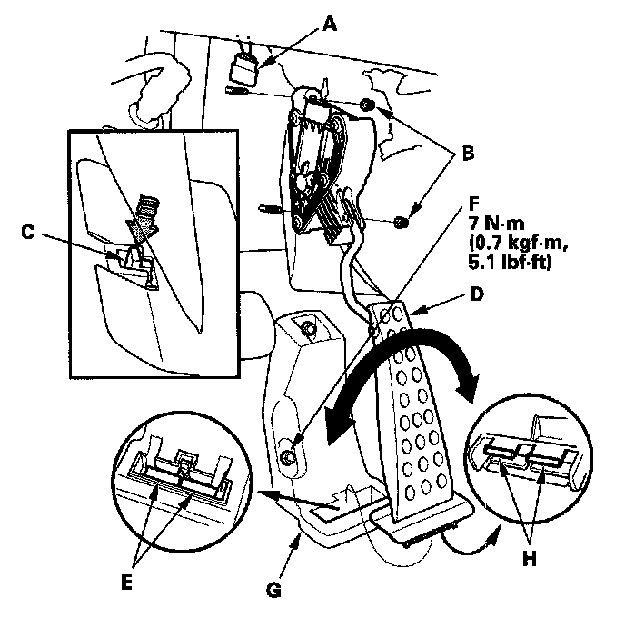
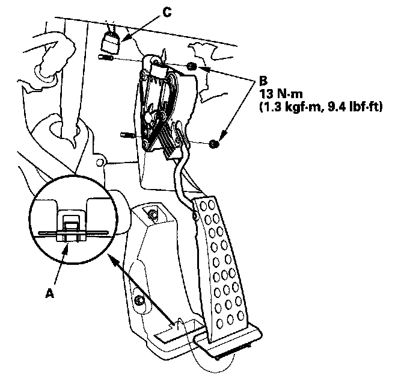

Accelerator Pedal Position Sensor: Service and Repair
Accelerator Pedal Module Removal/InstallationREMOVAL

1. Disconnect the accelerator pedal module connector (A), then remove the nuts (B).
2. Push the tab (C).
3. Pry the accelerator pedal module to right and left, and remove the accelerator pedal module (D).
NOTE:
- The APP sensor is not available separately. Do not disassemble the accelerator pedal module.
- If the tab or tab receivers (E) are damaged, pull back the carpet, remove the nut (F), and replace the pedal stop (G).
- If the tabs (H) of the accelerator pedal module are damaged, replace the accelerator pedal module.
INSTALLATION

1. Install the accelerator pedal module.
NOTE: Make sure the tab (A) is secure.
2. Install the nuts (B), then connect the accelerator pedal module connector (C).
NOTE: Make sure that the accelerator pedal module is secure.